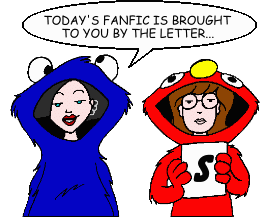
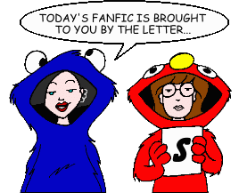

Fan Fiction
"S" by Title

Fan Fiction
"S" by Title

|
Authors: If you no longer wish for any of your stories to be posted, please send e-mail to fanfic@lawndale.net and I will remove them at once. |
| Sacked Out By Arianwen P.F. Everett Category: School Situations Daria and Jane must manage two baby dolls from hell for a school project in parenting. |
| Sailor Brittany By Mitch Category: Crossovers & Parodies A "Sailor Moon" parody. |
| Sailor Switch By CrazyInsaneAnimeFanGirl Category: Crossovers & Parodies A bizarre dimension hole causes some of the Daria characters and some of the Sailor Moon characters to switch places! |
| The Sandi Plague By Mike Category: Miscellaneous When Sandi comes down with the flu, Ms. Li "volunteers" Daria and Jane to go to her house, give her homework assignments, and tend to her needs. |
| Sandi Was Here By Robin Sena Category: Crossovers & Parodies Yet another take on the "Kilroy Was Here" album concept by the progressive rock band known as Styx, in which Dr. Brittany Taylor of the Battalion for Brittany's Bimboness (BBB) is bent on wiping out all things fashion... that is until Sandi, who breaks out from jail, sets out to bring fashion back. |
| Sappy Holidays By Kristin Wegner Category: Holidays It's the Yuletide season in Lawndale, and the Daria crew is ready to do a little celebrating of their own. The Morgendorffers and the Lanes (plus Jesse) have a real-life White Christmas in Racine, WI. |
| Sarcasm of Titanic Proportions [Artwork] By Matt Category: Crossovers & Parodies Yes, it's what you think it is: "Titanic" rewritten with our favorite Lawndalians. Trust me, it's much better this way! |
| Sarcasm Queen By Christa Category: Romance Things happen between Daria and Trent (once again) after a little prodding from Jane (once again) and a few accidental findings. |
| Satura Tota Nostra Est By Daniel Suni Category: School Situations When Daria, of all people, is caught cheating, Ms. Li decides to take advantage of the situation, and Daria finds herself *really* stuck between a rock and a hard place. (And if you want to find out what the title means, you'll have to read the story!) |
| Save the Nauga's Hide By Greystar Category: School Situations A short story where Kevin finds out the horrible truth about his favorite sport. (Actually, an Iron Chef fic with the theme of "messing with the mind.") |
| Saving Hope By Richard Lobinske Category: Alternate History In an alternate reality, Jake drives Daria and Quinn to their new school in Lawndale while Daria thinks back on the time she spent at Highland's alternative discipline facility, Hope High School. |
| Scanner By Galen Hardesty Category: Miscellaneous Some human minds have a terrible power, and Quinn has made herself a target of one such mind. Can she save herself? Can Daria save her? A Daria/Scanners crossover... not! Actually, this is a what-if story. What if Daria hadn't been quite so patient with Quinn about the cousin thing? |
| Scarlett (*) By The Angst Guy Category: Miscellaneous When Daria moved to Lawndale and started school at Lawndale High, someone else moved there and started classes with her. Introducing Scarlett, her mouse, and the Lawndale Leopards in an illustrated tale about what the background characters were REALLY doing behind the scenes of our favorite show. |
| Scarlett the Fairy By Aloysius Category: Series & Multi-Part Stories (Sci-Fi, Fantasy & Horror) The wild and wacky (and often naughty) adventures of Scarlett the Fairy. |
| Schismatic By Smileyfax Category: Sci-Fi, Fantasy & Horror Daria, fresh from being checked out of a mental institution, finds she is the only person able to stand between an ancient god and the end of the human race. |
| School Daze By Splendora Category: Past & Future It's Daria's 10 year high school reunion, but why is Quinn there?! And what will happen when she meets up with The Band Formerly Known As Mystik Spiral? |
| Schrodinger's Tiger (*) By The Angst Guy Category: Miscellaneous Quantum physics and murder--the perfect combination. |
| Science Fare [Artwork] By Admonisher Category: School Situations Witness the "Upchuck 2000!" Watch as Kevin tackles relativity! Marvel at the wonders of the "Perfuminator!" Tremble in fear at "The Thing from Trent's Closet!!!" And see what happens when the Fashion Club takes over the annual Lawndale Science Fair. You've been warned! |
| The Scorpion Quinn By Brandon League Category: Miscellaneous After a long and torturous wait, the Fashion Club prepares to see the popular film "The Scorpion King," starring WWF wrestler The Rock. Little do they suspect that Daria, Jane, and Mystik Spiral are going as well, nor do they expect the hilarious practical joke planned for them by Daria, Jane and Max Tyler. |
| Scream in the Life of Daria By Foo Fighter and Nessy Thompson Category: Crossovers & Parodies Someone's killing off the students of Lawndale High, in this parody of the film "Scream." |
| Sculptures By Caira Category: Crossovers & Parodies One of the world's few intelligent vampires finally gets a clue and a hitman, and Buffy the Vampire Slayer is dead. And there was much rejoicing. Of course, someone has to replace her, one girl in all the world at any time and all that, and with the way Daria's luck's been running lately... |
| Sea's Sorrow By Diane Long Category: Sci-Fi, Fantasy & Horror When Daria accompanies Jane and Tom on a Mystik Spiral gig to a quaint bed-and-breakfast on the coast, the World's Biggest Skeptic finds herself (along with the rest of the gang) embroiled in a mystery of supernatural proportions. |
| Season of Hope and Blight By MeScribble Category: Holidays Jake's fake Christmas tree disgusts his daughters, particularly Daria, who ends up feeling more than a little like Charlie Brown facing the crass commercialism of the Christmas holiday. |
| Second Glance By Sarah Lane Category: Past & Future A sequel to "Life As We View It." Later in the day, Daria wonders if she's made the right decision. |
| Second Place By Angelinhel Category: Past & Future Daria watches as Jane accepts second place. |
| The Secret Life (*) By The Angst Guy Category: Romance Two college students from Lawndale finally realize they were made for each other--but will anyone else realize this, too? |
| Secrets, Changes, and Other Disturbing Parts of Growing Up By Hikhali Category: Miscellaneous Daria, faced with parents and family blind to her emotions, turns to Jane and Trent for solace. |
| See Jane Spike (*) By The Angst Guy Category: School Situations Daria, Jane, and the Fashion Club find themselves on opposing teams in a nasty session of volleyball--a first-season sequel, of sorts, to the opening scenes from every episode in which Daria screws up the game for Stacy and Tiffany. |
| See You In the Funny Papers By Firah Category: Miscellaneous Daria becomes very interested in a new comic strip in the Lawndale Sun-Herald... but she has no clue as to where that interest will ultimately take her. |
| Seeing Things Through By Renfield Category: Miscellaneous Before departing the art colony, Jane has another encounter with Alison. Set during the events of "Is It Fall Yet?". |
| Seeking Trent By Thea Zara Category: Miscellaneous Trent goes missing -- not unusual, except for the fact that he failed to tell anyone where he was going -- prompting Daria and Jane to go looking for him. |
| Self Less By Thomas Mikkelsen Category: Miscellaneous Quinn must face the crisis of her life: she didn't get invited to a party. |
| Self Satisfaction By Noah Levine and Joseph Lillo Category: Miscellaneous Daria learns that sexual suppression is a harder task than she had anticipated. |
| Self-Insertion (*) By The Angst Guy Category: Miscellaneous A semi-erotic furry Mary-Sue fanfic for the "Daria" show. One day I will regret ever writing this, I am sure. |
| Selling Sarcasm By Shane Greentree Category: Miscellaneous A journey into the inspirational system that can make anyone a winner. |
| Sentence Passed By Wilson Perez Category: Crossovers & Parodies In this parody of the TV series "The Prisoner," Daria learns about a place that some people get sent to for security reasons, and decides it's time for some payback. |
| Separation By April and Mitch Category: Miscellaneous After Jake comes home drunk, Helen throws him out and throws their daughters' lives into turmoil. |
| The Setup, Part 2 By Luxa Goldmine Category: Romance A sequel to "The Setup," which follows up on Daria and Trent after their trip to the movies. |
| The Setup By Stephen Becker Category: Romance Daria goes with Trent to the movies. But they have some special interferences. |
| Seven Days By E.A. Smith Category: Crossovers & Parodies Jane finds and watches a mysterious videotape, with dire consequences, in this crossover with "The Ring." |
| Seventeen Candles By Courtney Wells Category: Miscellaneous Daria is turning 17 and Helen tries to plan a surprise party to show how much she cares. Naturally, that's about when everything goes straight to hell... |
| Sew What? By Diana Rajchel Category: Miscellaneous Daria has to do some quick thinking when Sandi, after failing to steal Tom away from Daria, tries to kick Quinn out of the Fashion Club as punishment for Daria's "social code violation." |
| Sex and the Cynical Girl By Danny Bronstein Category: Romance Daria feels pressured to have sex with her boyfriend Trent. |
| Sex, Please?! By Lupinsmoon12391 Category: Miscellaneous Quinn starts her own club, Helen tries to save the day, Trent gets a job, and Upchuck attempts to join the human race. Character development, much? |
| Sexual Education By Alan Markowitz Category: School Situations Daria and Jane take a sexual education class taught by Mr. DeMartino. |
| Shabby Road By jak981125 Category: Crossovers & Parodies Sit back and enjoy as Mystik Spiral parodies the classic Beatles album "Abby Road." |
| The Shadow Over Lawndale By Michael Sears Category: Sci-Fi, Fantasy & Horror Lawndale meets Lovecraft as Daria, Jane, and Trent encounter an unusual rock band... and the power of the Cthulhu Mythos. |
| Shadows and Secrets By Crusading_Saint Category: Sci-Fi, Fantasy & Horror What lengths would you go to for your friends and family? How far would you go? Jane is about to find out. |
| Shaken, Not Stirred [Artwork] By Rick Hennigan Category: Miscellaneous Daria awakens in the storage room of a tavern near her parent's college with no idea how she got there, on the weekend her parents are away and she must ride herd on Quinn. And that's just the beginning of the story... |
| Shared XX By Richard Lobinske Category: Holidays After the events of "Boxing Daria," Daria tries to find a proper Mother's Day gift for Helen. |
| She Was All That By John Berry Category: Miscellaneous A quasi-sequel to Austin Covello's "A Day in the Life of Stacy." Stacy is thrown out of the Fashion Club for associating with "that loser geek," Ted DeWitt-Clinton. Friendless and directionless, Stacy turns to "the most exclusive clique in the whole town" for acceptance... but will Daria and Jane take her under their wings? |
| Sheep Go to Heaven, Goats Go to Hell By Robin Sena Category: Past & Future Taking place after the events in "Is It Collage Yet?," Brittany learns the hard way just how serious divine retribution can be. |
| Shieldmaiden By Richard Lobinske Category: Past & Future After graduation, Andrea joins the US Army and becomes a helicopter medical evacuation pilot. Expanded from several PPMB's challenges. |
| Shining Star By Various Authors Category: Series & Multi-Part Stories (Sci-Fi, Fantasy & Horror) Similar in design and intent to the Daylight series, this series describes a chronological series of astronomical and biological events that occur over a period of years when a supernova erupts in Earth's interstellar neighborhood, only 14 light years away. |
| Shiny Happy People By MJ Brault Category: Miscellaneous Tiffany dies of anaphylaxy, leaving her friends and family to ponder the loss. |
| Shipping Charges Apply By Yui Daoren Category: Miscellaneous Helen and Jake's marriage is crumbling, and Quinn can't take it! What's a 17-year-old cynic to do? Take up a martial art? |
| Shoot, Damn You, Shoot! By Robert Nowall Category: School Situations It's Picture Day at Lawndale High, where alphabetical order makes for strange bedfellows. |
| Short & Sweet (*) By The Angst Guy Category: Miscellaneous This is an anthology of 25 ficlets and one-shots that are not worth posting by themselves. I'm not sure if they're worth posting even as a group, but I have no self-respect and I love to bother people, so here they are. |
| A Short Fic (*) By Queen Jossie Category: Miscellaneous A short story about the events of "I Loathe a Parade." A lead-in to the author's next few stories. |
| A Show is Not Only a Show By Jane Category: Romance Jane, Trent, and Jesse are going to a Korn concert. Daria is asked to come along. Shipper action ensues. |
| Sibling Rivalry By Thomas Mikkelsen Category: Miscellaneous The title says it all... |
| Sick Sad Jamboree By Diana Morgan Category: Miscellaneous Lawndale high holds a "voluntary" picnic on the same day that "Sick, Sad World" premieres a brand new LIVE episode. Will Daria and Jane attend the "voluntary" picnic, or will they stay home and deal with Ms. Li later? |
| A Sick, Sad Goodbye By Daniel Suni Category: Miscellaneous Daria and Jane have a discussion about their favorite TV show. |
| The Signup By Greystar Category: Crossovers & Parodies Jane tries to talk Daria into signing up for a national television show... on The Learning Channel? "Junkyard Wars" may never be the same again! |
| Silly Rabbit, Matrix Are For Kids! By John Berry Category: Crossovers & Parodies The Keanu Reeves movie "The Matrix" (or possibly a brain aneurysm) provides the basis for this parody, in which Daria discovers what she's suspected all along: that "reality" is not what it seems. |
| A Simple Makeup Kit By Richard Lobinske Category: Past & Future When fourteen-year old Daria becomes interested in a boy in her eighth-grade class, she's inspired by a TV show to think that she can be attractive and brainy to interest him. To learn about makeup, she volunteers to help at Highland's volunteer theater and when the boy agrees to see a show with her, she puts her new skills to the test. |
| Simplicity Itself By Glasswing Category: Romance Depressed and feeling alone, unattractive, and unwanted, Daria turns to the bottle for solace. Will this cause her to do something drastic? |
| The Simpsons in Lawndale? By Emo Fringe Category: Crossovers & Parodies What would happen if Bart, Lisa, and Maggie Simpson, now high schoolers, showed up in Lawndale? |
| Sins of the Past [Artwork] By Martin J. Pollard Category: Miscellaneous The Morgendorffers are plunged into a nightmare when Quinn goes on a date and disappears. Her discovery, and the nature of her disappearance, touches off a series of events that affects the lives of everyone around her, and forces Daria to come to terms with her stormy relationship with Quinn... a sister she may lose forever. Note: This story includes content (language, violence, or sexual situations) that may not be appropriate for some readers. |
| Sister-In-Law (*) By Nicole Young Category: Past & Future A Lane/Morgendorffer family reunion, nine years from now. |
| Six Days of the Hamster By Brother Grimace Category: Crossovers & Parodies A Daria/Groundhog Day crossover has Daria reliving the events of "Esteemsters"--well, the first day, actually--over and over again... |
| Size Does Matter By BlackHole Category: Series & Multi-Part Stories (Alternate History) What if Daria and Quinn were quite tall... and Daria acted much like a boy? Life in Lawndale with a different perspective. (Note: this multi-part story is a work in progress.) |
| Ski Trip By Boarder Bum Category: Romance Daria and Trent go on a ski trip. |
| The Slacker Within By Medea42 Category: Miscellaneous Through a twist in the universe, Trent crosses over into the physical dimension and into the keeping of a somewhat obsessed and lonely fan. |
| Sleep With Me: Another Misleading Title By Mitch Category: Past & Future Daria's daughter spends the night sleeping next to her mother. |
| Sleeping With Trent 2 By Mitch Category: Romance A year later, Daria and Trent are in a hotel room again. This time, Michael Andrews and Mara are also around. |
| Sleeping With Trent: A Slightly Misleading Title By Mitch Category: Romance While on vacation, Daria and Trent share a hotel room, and learn things about each other that they never knew before. |
| Sleepover By Bigglesworth Category: Miscellaneous Helen and Jake leave for the weekend and Quinn throws a party. |
| Sleepy Lawndale Awakens By Bacner Category: Series & Multi-Part Stories (Miscellaneous) (no description available) |
| A Slice of Pizza By Brother Grimace Category: Past & Future Set about a year after the events of "IICY?", two old friends meet back at a old high school hangout, and discuss "the road not taken." |
| Slight Return By Jill Palmer Category: Miscellaneous Just after the events of "Is It Fall Yet?", Lawndale gets treated to some more supernatural weirdness, which hits a little close to home for Daria and Jane. Crossover with the novel Good Omens. |
| Smackdown By Galen Hardesty Category: School Situations Ms. Li's spying backfires as Daria and Jane decide to take back the restroom. |
| Small Worlds (*) By The Angst Guy Category: Miscellaneous Daria and Jane meet a new Tom in this shameless Mary Sue set after "Is It College Yet?" |
| Smoke and Ashes By Yui Daoren Category: Miscellaneous Daria, Jane and Quinn survive a school shooting. Their losses take a greater toll, and Daria wonders if she did enough. |
| Smoking Mirror (*) By The Angst Guy Category: Sci-Fi, Fantasy & Horror After a disastrous experience in Central America, Penny Lane returns to Lawndale, her life in shambles--but with her is a dark souvenir that unravels the lives of everyone around her in terrifying ways. |
| Snow Ball in Hell (*) By The Angst Guy Category: Miscellaneous Mrs. Johanssen collects souvenir snow balls--but only a certain kind, as Tricia Gupty discovers. A PPMB "Iron Chef" challenge. |
| Snow Darn By Patrick Moore Category: Miscellaneous Lawndale gets hit by a snowstorm. Chaos ensues. (Don't worry, no one sings in this one.) |
| Snow Problem By Smileyfax Category: Sci-Fi, Fantasy & Horror In this sequel to "Night of the Living Furniture," Jane and Daria have one final horrific encounter with Tom Sloane in Montana. |
| Snowed Out By Chris Orban Category: Miscellaneous Daria goes to Aspen with her family and Jane goes to the beach with Trent. |
| Snowflakes (*) By The Angst Guy Category: Miscellaneous Daria makes a surprising discovery while looking through her parents' bedroom drawers, but the real surprises are yet to come. |
| Snuffed Animals By Disco 3:16 Category: Alternate History When the flames are put out, the fires are just beginning to burn. See how things might have developed had the events of "Fire!" happened differently. |
| So Long As Men Can Breathe By E.A. Smith Category: Past & Future Two years after "The Tempest," an art exhibit for Jane sends shockwaves through the lives of Daria, Jane, and James. |
| Something Didn't Happen By Greystar Category: Miscellaneous Daria makes a fateful, possibly fatal, decision. Will she be convinced otherwise? A literary rebuttal to Wraith's story "Something Happened." |
| Something Happened (*) By Wraith Category: Miscellaneous Daria and Tom have a fight. This is the story of the following week, as things resolve. Note: This story includes content (language, violence, or sexual situations) that may not be appropriate for some readers. |
| Something Is Rotten in the State of Lawndale By Kristen Bealer Category: Crossovers & Parodies Vengeance!? Swordfighting!? Self-esteem workshops!? Daria must avenge her father's death, but there's less murder and more silliness in this parody of Shakespeare's "Hamlet." |
| Something to Note By Anay Lewis Category: Past & Future An interview with Daria Morgendorffer, 30+ years into the future. |
| Something To Shoot For By Dervish Category: Series & Multi-Part Stories (Miscellaneous) A shooting at Lawndale High shocks the nation, and makes everyone (especially their mother) wonder who Daria and Quinn Morgendorffer are. A three-part story with some minor crossover elements from "Beavis and Butt-Head Do America." |
| Somewhere Out There By Robin Sena Category: Miscellaneous For Daria, it's bad enough getting straned in the Rocky Mountains, but what's worse is that she's stranded with the queen of the bimbos, Brittany. |
| Somewhere Over the Edge By Don Fields Category: Miscellaneous In this dark comedy, Daria gets a good lesson on death, profits and the American Way, thanks to Upchuck and his "friends"...huh-huh. |
| Son of Pad (*) By NomadX Category: Miscellaneous The flashy, big-budget sequel to "From the Pad of NomadX." |
| The Song Remains the Same (*) By NomadX Category: Miscellaneous A Trent-centric fic focusing on Daria and Jane. A look into the mind of an artist. |
| The Song That Jane Likes By Sam Lincoln Category: Miscellaneous Yet another post-IIFY Jane-fic. What does a depressed art chick do to get her groove back? |
| Songs of the Harpies By Bacner Category: Miscellaneous A series of songs that the Harpies (Monique's band) may or may not put out. |
| Songs of the Harpies II By Bacner Category: Miscellaneous The Harpies have released their second volume of songs, only this time they've listened to their agent and didn't go mythological on the audience. |
| Sonya By Mitch Category: Miscellaneous When Jodie thinks that Mack is ignoring her, she's helped by a girl named...Sonya. |
| The Sound and the QB By Gregor Samsa Category: Miscellaneous A tale told by Kevin Thompson, signifying nothing. |
| The Sound of One Band Sucking By Don Fields Category: Crossovers & Parodies Based on... excuse me, ripped off from Danny Bronstein's "One Band Town." Daria, Jane, and the rest of the Mystik's travel to a gig in South Park to perform at "CowFest '99." They barely survive (the cows incuded). |
| Soup's On! By Wyvern337 Category: Miscellaneous Jake tries yet another of his experiments in cooking, with unexpected results. |
| The Sour-puff Girls By traP Category: Crossovers & Parodies Mystik Spiral gets a gig in Lawndale, where the mayor is Kevin's uncle... we think. Brittany offers Daria and Jane a ride in Kevin's Jeep when Trent's car won't start. Worse yet, the Powerpuff Girls (and, when they get in the way, Kevin and Trent) are captured! Guess who has to save the day this time, with a little help from one worried Professor? |
| Sowing and Reaping By Thomas Mikkelsen Category: Holidays It's Halloween, and Quinn is volunteered to accompany the children. Luckily, she has a sister who can take over her duties. |
| The Space Between By Sam Lincoln Category: Miscellaneous Why exactly do Daria and Tom keep breaking up and making up? And what would happen if one of them decided to break the cycle? |
| Special Delivery (*) By The Angst Guy Category: Miscellaneous Why was Daria out after curfew in "The Big House"? One possible (if far-fetched) explanation is given here, in this prequel to that episode. |
| Special Delivery By Wyvern337 Category: Miscellaneous Set when Daria was a very young child. Two characters meet for the first time. Impressions are made. |
| Spelling It Out By Richard Lobinske Category: School Situations After winning the class spelling bee, Mr. O'Neill enters Daria in the school competition, which could lead to regional and/or state. When she accidentally wins the school competition, she finds herself in the uncomfortable position of representing Lawndale at regional. |
| Spirit of the Law By Brother Grimace Category: Miscellaneous Helen and The Senior Partner have a meeting--one that proves pleasurable for both. |
| Spite Club By MystikSpiralChick Category: Miscellaneous Find out a bit more about some of the characters. Plus, Daria makes a mistake that turns Trent against her. |
| Squandered Potential By Kristen Bealer Category: Past & Future Anthony DeMartino's first year at Lawndale High School may also be his last. A precanon fanfic that explores how Mr. DeMartino turned into the high strung, eye bulging, syllable-stressing teacher we know and love... sort of. |
| Stacy and the Lamp (*) By The Angst Guy Category: Sci-Fi, Fantasy & Horror Stacy Rowe rubs an ancient brass lamp, gets three wishes--and it's the end of the world as Lawndale knows it. |
| Stacy in Hell (*) By The Angst Guy Category: Past & Future A cautionary tale. The title says it all. |
| A Stacy Orange By Thomas Mikkelsen Category: Miscellaneous While Lawndale is down with the flu, Daria and Jodie are inspired by the novel "1984." |
| Stacy Rowe, Evangelion Pilot By Austin Covello Category: Crossovers & Parodies In this crossover with the anime series "Neon Genesis: Evangelion," Stacy is now the pilot of Evangelion Unit 03, defender against the Angels. But Stacy has bigger problems: her teammates! How will she handle working with a redheaded bully, a weirdo roommate, and a boy who's as callow as she is? A five-part story, with links to each chapter at the end of each story. |
| Stained By BTL Category: Miscellaneous A dark story of obsession, but who's obsessed... and who's the target? |
| A Star in the East Window (*) By Guy Payne Category: Holidays A prequel to "Kadhimiya," written in answer to Thea Zara's Christmasfic challenge. |
| The Stick Is Canon! (*) By The Angst Guy Category: Miscellaneous There should perhaps be limits on how literally fanfic writers can interpret canon, or on how trivial a detail can be to not be worth writing about. |
| Sticks (*) By Nick Gaston Category: Alternate History A poor parenting decision years earlier leaves Daria on her last nerve. (Ba-dum-bum.) |
| Stinkbutt Part Two By Robert Nowall Category: Crossovers & Parodies In this parody of the TV series "NewsRadio," a new intern comes to WNYX... a certain sarcastic teenager from Lawndale. Meanwhile, Matthew is posting fan fiction on the Internet. |
| A Stitch in Time [Artwork] By Admonisher Category: Miscellaneous A dark fantasia of romance and suspense, this novella is set in renowned 'shipper author Diane Long's continuum, carrying Daria and Trent six years beyond the events of Undone and deep into a startling, possibly tragic future. Note: This story includes content (language, violence, or sexual situations) that may not be appropriate for some readers. |
| The Stone By Sam Lincoln Category: Sci-Fi, Fantasy & Horror An unfortunately all-too-familiar horror visits Lawndale, and Daria gets caught in the middle. Note: This story includes content (language, violence, or sexual situations) that may not be appropriate for some readers. |
| The Storm By Pat Leland Category: Miscellaneous Interesting events ensue when most of Lawndale is trapped under the school during a hurricane. |
| Story Girl By Erin Mills Category: Crossovers & Parodies Daria and Jane take on the classic Billy Joel song "Piano Man." |
| The Story In Which Daria Goes to a Party, Gets Drunk, and Does Bad Things, Revisited By Dante Tremere Category: Miscellaneous The title pretty much tells the story, written with the "anti-shippers" in mind. NOT your average story! |
| A Story to Tell By Ronin Category: Past & Future One of our Lawndalians recalls what's happened to Daria and co. since Is It College Yet? Guess who's the storyteller. |
| Strange Bedfellows By Mystik Slacker Category: Miscellaneous Sandi tries to put her life back together after the dissolution of the Fashion Club. Daria and Upchuck set up the school's new computer lab. Tom joins Daria and Jane on a school trip. A romance is kindled, but can it survive? Should it? A sequel to the author's "Breaking Strain." |
| The Strange Loves of Anthony DeMartino By Robert Nowall Category: School Situations Another year has gone by at Lawndale High, and saying goodbye proves particularly hard for one of the teachers and one of the students... |
| A Stranger in Lawndale By Belle Book Category: Series & Multi-Part Stories (Romance) A mysterious stranger arrives in Lawndale and when he meets Stacy, their lives are changed forever. Set shortly after the events of "Is It College Yet?", during Stacy's senior year at Lawndale High. |
| Stranger Than Fiction [Artwork] By Admonisher Category: Crossovers & Parodies While investigating a case involving a seemingly deranged man, FBI agents Fox Mulder and Dana Scully find their perception of reality severely challenged when they're somehow transported into the cartoon world of Lawndale. There, they team up with a reluctant Daria and her friends to help set things right before both universes are destroyed. An epic crossover with "The X-Files" that proves the truth really is out there. (Or in there. Whatever.) |
| Strangers in Royston Vasey (*) By James Burrows Category: Crossovers & Parodies The Morgendorffers take an ill-advised holiday abroad, in an even more ill-advised crossover with The League of Gentlemen. |
| Structure By Angelinhel Category: Past & Future "Mad Dog" Morgendorffer decides little Jakey's fate. |
| Stuck in Lawndale By Neal C. Category: Series & Multi-Part Stories (Miscellaneous) A series that finds the author trapped in Lawndale after ranting against "fair-weather fans." Is it just desserts, or a dream come true... or a dream, period? |
| Study Break By Brother Grimace Category: Miscellaneous Jodie Landon has a study session at her house. Never again! |
| Stupid (*) By The Angst Guy Category: Miscellaneous It was the worst possible relationship in every way but one. |
| Stupid Is as Stupid Really Does By Patrick Moore Category: Miscellaneous Two of Daria's old friends come to Lawndale. Can you guess who they are? |
| Stupid Things By Shawa Category: Romance Daria, Jane, Trent and Tom go to the girls' prom. Jane gets whacked. Daria gets Trent. The usual deal. |
| The Stupidity Boundless Series By Scarlet Category: Series & Multi-Part Stories (Miscellaneous) After the untimely demise of his cohort, Beavis is forced to attend Lawndale High, much to the dismay of just about everyone in Lawndale. |
| The Submariner Series By Wildgoose Category: Series & Multi-Part Stories (Past & Future) A series set in a post-Y2K future, one in which the whole "Y2K hysteria" was justified, The Bombs have dropped, military service is more the norm than the exception, and -- most shocking -- Daria and Jane are a submarine captain and first officer! |
| Substitute Teacher By Mitch Category: Past & Future A sort-of sequel to C.E. Forman's "Accept No Substitutes." It's Daria's daughter's first week of first grade and Margot Haworth is her substitute teacher. |
| Sudden Death By SoulfulZen Category: Sci-Fi, Fantasy & Horror Who is killing off the most popular residents of Lawndale? Why are they doing it? A collection of four mini-ficlets tells the story. |
| Sudden Death Overtime (*) By The Angst Guy Category: Sci-Fi, Fantasy & Horror A pink blossom grows from Kevin Thompson's crutch at the end of the fourth-season episode, "A Tree Grows in Lawndale." What happened after that? This horror-story sequel starts immediately following the blossom's appearance, so its beginning is entirely in canon! |
| Suite for Cello, Two-Part Invention (*) By The Angst Guy Category: Miscellaneous Brittany Taylor has a secret talent she performs in her bedroom--and her new tutor, David Sorenson, is about to discover what it is. |
| Suite Seventeen By CF Category: Miscellaneous Daria's padded cell-like bedroom is featured in teenage fashion magazine Seventeen. Inspired by the actual article from the July 1998 issue. |
| Summer By Pulchritudinous3 Category: Romance It's summer vacation, and Jane, Daria and Trent go to the community pool. |
| Summer Fling By Sarah Lane Category: Miscellaneous Jesse and Daria get together for the summer... sort of. |
| Summer of the Hot Lake (*) By The Angst Guy Category: Miscellaneous The younger siblings and relatives of major "Daria" characters find themselves spending the summer at "Uncle" Timothy O'Neill's all-new Okay-to-Cry Corral, with none other than Wind Lane as their cabin counselor. There, the kids face the horrors of rice cakes and tofu for breakfast, therapy sessions to heal their inner selves, a legendary monster in the cooling pond of a nearby nuclear power plant, and--first love. Sam and Chris Griffin, Rachel Landon, Brian Taylor, Link, and Jane Lane's nephew and niece, Adrian and Courtney, appear in this novel-length tale. The action takes place after the events of "Is It College Yet?". |
| Super Zero By Erin Mills Category: Sci-Fi, Fantasy & Horror Just who is Jake Morgendorffer? Is he really a clueless yutz, or is there more to him than he lets even his family see? |
| Surprise By Maria Isais Category: Romance It's a thin line between love and hate, and Daria and Trent have crossed it... several times. |
| Survival of the Fittest By Bacner Category: Miscellaneous After the events of "IICY?", Doug Thompson takes his family into the bosom of Mother Nature. The latter, unfortunately, has other ideas and plans... |
| Survivor By Steph Category: School Situations For a school news segment, six randomly chosen Lawndale High students have to participate in a "Survivor"-type game. Daria finds herself one of the chosen, and is marooned in the school gym for three days with five other survivors. Who will emerge the victor? |
| Survivor's Guilt By Bella Category: Miscellaneous How does one Morgendorffer girl react when the other commits suicide? |
| Sweet Child of Mine By Wouter Jaegers Category: Miscellaneous Mother and child relationships: a thing that all the Lawndale High students know about, or think they do. But what is it *really* like to be a mother? One of our young Lawndalian women will find out. |
| Swing Happy By Prindora Category: School Situations Daria and Jane's gym class learns to square dance. |
| The Switch By Brett Shearer Category: Sci-Fi, Fantasy & Horror Daria and Quinn, although sisters, are two very different people. But what if their consciousness was transferred into each other's bodies (ala "Freaky Friday")? Find out as each learns first-hand how the other half lives. |